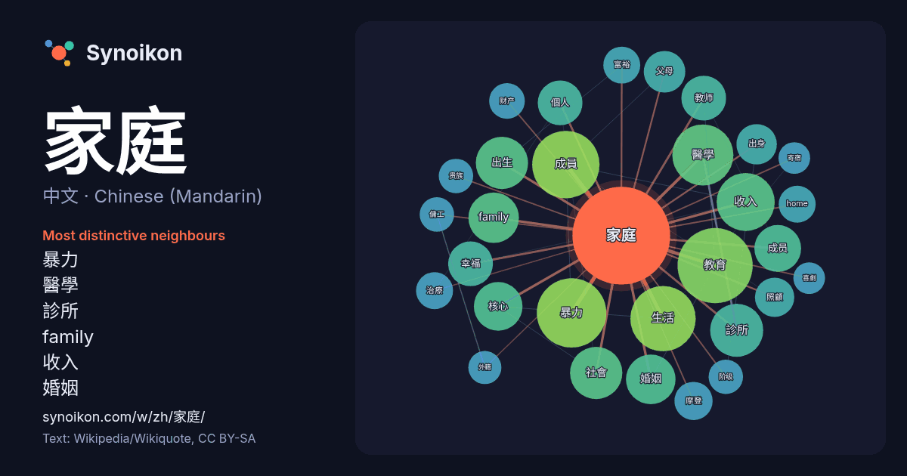

中文 · Chinese (Mandarin) · popular word
家庭
“family” · The words found around it in 1522 instances from Chinese (Mandarin) Wikipedia, Wikiquote.

Most distinctive neighbours
- 暴力 35×
- 醫學 32×
- 診所 29×
- family 27×
- 收入 21×
- 婚姻 20×
- 成員 19×
- 教育 19×
- 幸福 18×
- 教师 18×
- 摩登 16×
- 出生 15×
- home 15×
- 核心 15×
- 富裕 14×
- 照顧 14×
- 傭工 14×
- 出身 13×
- 生活 13×
- 财产 13×
× = how many times more often than in general Chinese (Mandarin) Wikipedia text.
Most frequent neighbours
- 教育 62
- 暴力 53
- 一個 51
- 成員 50
- 生活 47
- 醫學 41
- 收入 37
- 中国 34
- 診所 31
- 中的 30
- 出生 30
- 社會 30
- family 28
- 婚姻 27
- 核心 26
- 主要 24
- 成员 24
- 世界 22
- 個人 22
- 幸福 22
In context
- 条目：家庭，第10册，p412 条目：家庭，历史中的家庭功能章，第10册，p413 条目：家庭，历史中的家庭形式章，第10册，p413 条目：家庭，历史中的家庭形式章，乱伦禁忌节，第10册，p413 条目：家庭，历史中的家庭形式章，婚姻形式节，第10册，p413 条目：家庭，历史中的家庭形式章，术语节，第10册，p413 Wikipedia snippets · 家庭
- 《儿童与家庭童话集》（德語：Kinder- und Hausmärchen，KHM），俗称《格林童話》（德語：Grimms Märchen），是德國格林兄弟出版的一部著名童話集，首版出版於1812年。全书共收录童话200余则。 《格林童话》产生于19世纪初。此时，神圣罗马帝国统治下的德意志地區结构松 Wikipedia snippets · 格林童話
- 《家庭教师HITMAN REBORN!》是天野明的少年漫画作品。《週刊少年Jump》2004年26号开始连载，到2012年50號完結，單行本全42卷。最初是於《周刊少年Jump》2003年51号刊载的同名單篇試刊，并于2004年26号开始连载，该作品被收录于公式书中。在62回（單行本第8卷）之前，内 Wikipedia snippets · 家庭教師HITMAN REBORN!
- 《冒牌家庭》（英語：We're the Millers）是一部2013年罗森·马歇尔·瑟伯执导的美国犯罪喜剧電影。傑森·蘇戴西斯、珍妮佛·安妮斯頓、艾瑪·羅勃茲和威爾·普爾特主演。美国于2013年8月7日上映。 故事敘述不起眼的毒贩大卫在一次多管閒事下遭到小混混抢劫身上所拥有的2万元现金和大麻，因此 Wikipedia snippets · 冒牌家庭
- 《重組家庭》（韓語：조립식 가족／組立式 家族）是韩国JTBC自2024年10月9日起播出的水曜電視剧，由《二十五，二十一》、《朝鮮律師》的导演金胜浩（韓語：김승호 (연출가)）与新人编剧洪诗英合作打造。剧情讲述没有任何血缘关系但却作为家人一起度过青少年时光的三名男女，时隔10年再次相遇后展开的青春罗曼史。 Wikipedia snippets · 重组家庭
- 维基文库中的相关原始文献：家庭暴力防治法 维基文库中的相关原始文献：中華人民共和國反家庭暴力法 家庭暴力不僅是身體上的暴力，以下這些種類的家庭暴力也廣泛存在。 經濟的虐待 不提供或严格限制合理游玩和招待的费用。 不提供或严格限制生活费。 胡乱挥霍家庭财产或赌博欠下债务。 惡意破壞家庭財產。 过度把持家庭财产。 限制或妨碍配偶工作。 Wikipedia snippets · 家庭暴力
- 家庭法是與家庭事務相關的法律，包括 婚姻、民事結合、同居伴侶; 領養及代孕 虐兒及拐賣兒童 關係終結，包括離婚、婚姻解除、財產協議、離婚贍養費、子女撫養權及探望、養兒（子女抚养费）。 少年法庭 親子鑑定及父子詐騙 Sorge, J. & Scurlock, J. (2014). Divorce Corp: Wikipedia snippets · 家庭法
- 《普通家庭》（韓語：보통의 가족／普通의 家族，英語：A Normal Family，香港译《良心风暴》，台湾译《非普通家族》）是一部2024年上映的韓國犯罪劇情片，根據荷蘭作家赫爾曼·科赫（英语：Herman Koch）的暢銷小說《The Dinner（英语：The_Dinner_(novel)） Wikipedia snippets · 普通家庭
More Chinese (Mandarin) words
Precomputed on 2026-10-09 with default settings (±5 words, medium corpus). The interactive map can refresh it with live data.